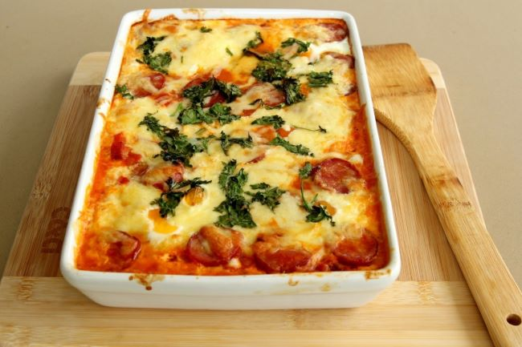

- 70g unsalted butter
- 50g plain flour
- 800ml milk
- 1 fresh bay leaf
- 800g spinach
- 200g ricotta cheese
- 1 whole nutmeg (for grating)
- 300g fresh lasagne sheets
- 100g parmesan cheese
|
- Preheat the oven to 190°C/375°F.
- Melt 50g of the butter in a pan and whisk in the flour. Cook for 1 to 2 minutes, then whisk in the milk till smooth. Season with sea salt and freshly ground black pepper, add the bay leaf and simmer for 5 minutes. Turn off the heat.
- Remove the stalks from the spinach, then wilt with the remaining 20g butter in a covered pan. When wilted, drain, then, when cool enough to handle, squeeze out the liquid.
- Chop the spinach and mix with the ricotta, a ladleful of the white sauce and a good grating of nutmeg. Season.
- In a baking dish, layer the lasagne sheets, white sauce, spinach mixture and a grating of Parmesan. Finish with a layer of pasta topped with sauce and more Parmesan.
- Bake for 30 minutes, or till golden.
|
Serving
Decorate with some extra parmesan on top!

Subscribe to get more recipes on your email:
nyheter@marleneskoek.com
|